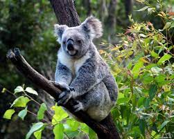
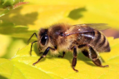
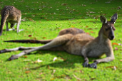

Австралия
Содержание
История названия
Ещё древние географы были убеждены в существовании в Южном полушарии гипотетической земли, которая на картах тех времён так и обозначалась — Terra Australis Incognita — «неизвестная южная земля». Это название впервые нанёс на карту во II веке Птолемей Александрийский, предполагавший, что Африка на юге переходит в не открытый ещё материк.
Голландские мореходы, первые доплывшие до этой земли, дали ей название «Новая Голландия». В 1814 году английский мореплаватель Мэтью Флиндерс первым из европейцев обогнул континент и предложил назвать его Терра Австралис, «как более приятное для уха». Но его предложение не сразу было принято, а лишь в 1817 году губернатор штата Южный Уэльс Лаклан Маккуори стал употреблять название «Австралия» в официальных документах и предложил Министерству по делам колоний Британской империи принять, что и было сделано в 1824 году.
Климат
Австралия — самый засушливый материк планеты и самая жаркая часть суши южного полушария, это объясняется тем, что наибольшую площадь на материке занимает тропический пояс. Благодаря расположению континента в Южном полушарии, сезоны года отличаются от привычных нам. Самый теплый месяц — это январь, а самый холодный — это июль. Но нельзя сказать, что в Австралии есть зима и лето, как у нас. У них четко выделены 4 сезона года. Они отличаются друг от друга характером и наличием осадков. Весна продолжается с сентября по ноябрь. В это время активно цветут растения. Температура комфортная. Нет изнуряющей жары. С декабря по февраль длятся летние месяцы. Температура часто превышает +40° C в тени.
Уровень осадков
Почти 40 % территории Австралии получают менее 250 мм осадков в год, и 70 % — менее 500 мм. Самый засушливый район Австралии расположен вокруг озера Эйр, в Южной Австралии. Ежегодно там выпадает менее 125 мм осадков в год. Для сравнения - в Москве выпадает 600—800 мм осадков в год, в Мадриде - 400 мм, а в Токио - 1530 мм. Регионы, получающие много осадков, невелики по площади. Снег регулярно выпадает только в двух местах — на высоте 1350 м в Австралийских Альпах и на высоте 1050 м в горах Тасмании.
Эмиграция
Из года в год Австралия уверенно занимает одну из лидирующих позиций среди стран, наиболее привлекательных для иммиграции. Первый и главный шаг после принятия решения - получение иммиграционной визы. Этот документ даст вам право на постоянное проживание в стране. Наибольшей популярностью пользуются варианты иммиграции следующих видов: профессиональная и семейная. Также есть возможность иммигрировать в Австралию для ведения бизнеса, по студенческим учебным программам и в статусе беженца.
Для желающих переехать в Австралию по программе для квалифицированных работников доступен ряд виз. Основное требование для кандидатов в профессиональном потоке – это наличие специальности, востребованной в стране. Актуальный список наиболее популярных профессий можно найти на сайте Министерства внутренних дел страны.
Внушительную часть списка занимают профессии из области IT, медицины, агропромышленности, инженерные специальности, а также работники социальной сферы. Категория для профессионалов предполагает возможность как иммиграции по приглашению работодателя, так и независимой иммиграции. Среди других требований – возрастные, требования по здоровью, знание английского языка на достаточном уровне, а также подтверждение уровня квалификации. Не забудьте ознакомиться с системой баллов их минимальным количеством, чтобы спрогнозировать свои шансы на получение визы. Данные баллы начисляются исходя из возраста, теста на знание языка, опыта работы и образования.
Фауна
Далёкая Австралия – древнейший материк, сформировавшийся более 3 млрд лет назад. Однако нога человека ступила на него довольно поздно, может, поэтому удивительная природа сохранилась до наших дней во всём своём многообразии?! Животный мир Австралии отличается большим количеством эндемиков – то есть такие звери и птицы не встречаются нигде в мире.
Самые прекрасные
Коала – совершенно умилительное, необыкновенное и неповторимое животное. Представители травоядных относятся к семейству сумчатых. Внешний вид животного достаточно необычный: густая и короткая шерсть серого или дымчатого оттенка, белое брюшко, небольшой вес (до 14 кг) и длина тела около 85 см. Коала имеет плохое зрение из-за маленьких и подслеповатых глаз. Данную потерю сполна восполняет прекрасный слух и обоняние. Животные имеют большие уши, расположенные по краям головы и приплюснутый черный нос.
Коалы – темнолюбивые животные, которые днем предпочитают спать на ветках деревьев. Сумчатые медведи относятся к спокойным, флегматичным, добродушным зверькам. Коалы любят одиночную, даже отшельническую жизнь и соединяются только с целью размножения. У каждого животного есть своя отдельная территория, нарушать которую недопустимо, иначе может последовать агрессивная реакция.
Самые ужасные
Австралия - одно из самых привлекательных туристических мест на планете, рай для серфингистов и путешественников. Но известна она также и тем, что там обитает множество смертельно опасных хищников: океан кишит зубастыми акулами и жалящими медузами, а земля - ядовитыми змеями и насекомыми. На этих тварей интересно смотреть по телевизору, а вот столкнуться с ними в жизни - приятного мало. Арахнофобам в Австралию лучше не ехать. Ведь там - исключительно в Новом Южном Уэльсе - обитает паук, который может причинить здоровью человека серьезный вред и даже убить. Это один из самых опасных пауков в мире. Он не только крайне ядовит, но также очень агрессивен.
Западная медоносная пчела.
Кто бы мог подумать! Эта пчелка - крайне опасное создание и может причинить серьезный вред здоровью человека. По данным Australian Geographic, эти пчелы ежегодно убивают в Австралии больше людей, чем акулы, например. С одной стороны, пчелы - полезные насекомые, и с ядовитыми пауками их не сравнить, но факт остается фактом: они могут нести с собой опасность.
Остальные
Вомбат – это не маленький медведь и не большой грызун, а тоже сумчатое животное. Они роют норы и умеют накапливать жидкость в организме подобно верблюдам. Не все сумчатые отличаются кротким нравом. Тасманский дьявол издаёт по ночам жуткие звуки и способен справиться даже с крупным противником. Этот зверь является символом материка, одним из самых тиражируемых и узнаваемых представителей животного мира Австралии. Самые крупные плотоядные Австралии – это дикие собаки динго. Аборигены неоднократно пытались одомашнить этих полуволков, но тщетно: динго неизменно выбирали свободу. Они питаются всеми, кого могут поймать: от кенгуру до ящериц, но на худой конец сойдут и фрукты.
Самый известный представитель животного мира Австралии – это, конечно, кенгуру. Длинноногое и прыгающее сумчатое с огромным хвостом бывает нескольких видов: от полутораметровых гигантов до древесных валлаби.

10 интересных фактов
- Австралия – единственный материк на Земле, где нет ни одного вулкана или современного оледенения
- Животный и растительный мир Австралии насчитывает около 12 000 видов, причем 9 000 из них не встречаются больше нигде на планете.
- В Австралию запрещено ввозить любую растительность, продукты питания, меховые, деревянные, кожаные изделия и даже землю на подошвах ботинок. Таким образом австралийцы защищают свою экологию.
- В Австралии запрещено разводить кроликов, так как на континенте развелось слишком много этих пушистых зверьков. Сокращать их поголовье пришлось при помощи специально созданного вируса. Отметим, что первоначально в Австралии вообще не было кроликов – их завезли на континент европейцы.
- В Австралии был запрещен показ серии детского мультсериала «Свинка Пеппа», в котором главная героиня подружилась с пауком. Власти сочли, что учить детей не бояться пауков в стране, где обитает множество ядовитых разновидностей этих животных – не лучшая идея.
- Из-за засушливого климата в Австралии официально ограничено использование воды – например, с 10 утра до 4 часов дня нельзя поливать траву и дорожки, а также наполнять бассейны. Действие запретов ослабевает только в сезон дождей.
- Австралийский остров Тасмания является одним из немногих мест в мире, где на законных основаниях выращивают опиумный мак, используемый для производства лекарственных препаратов.
- Австралийский доллар – первая в мире валюта, банкноты которой стали делать не из бумаги, а из пластика.
- Крупнейшие города австралийского континента, Мельбурн и Сидней, в течение долгого времени боролись за право называться столицей государства. Чтобы прекратить этот спор, руководство страны основало новый город, специально построенный в качестве столицы, на одинаковом расстоянии от Мельбурна и Сиднея. Город получил название Канберра.
- Первыми европейцами, поселившимися в Австралии, стали высланные с родины за преступления британцы. Функции первых полицейских были возложены на 12 преступников с наиболее положительными характеристиками.